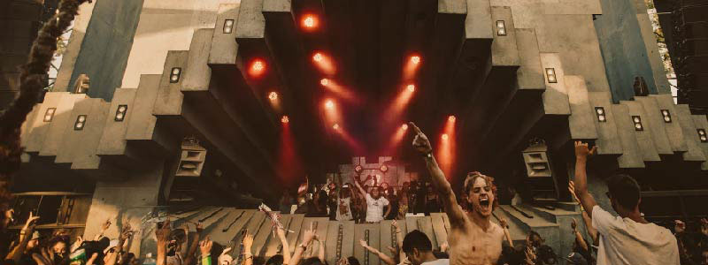
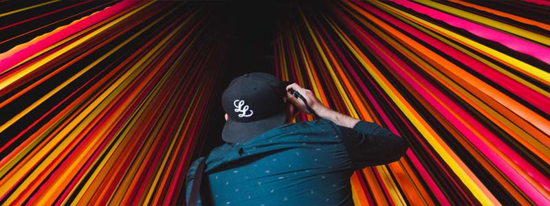
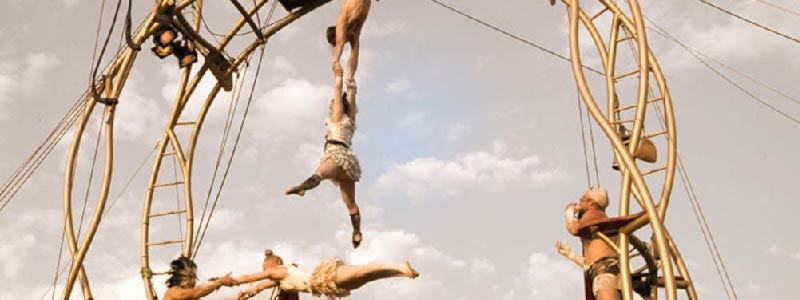
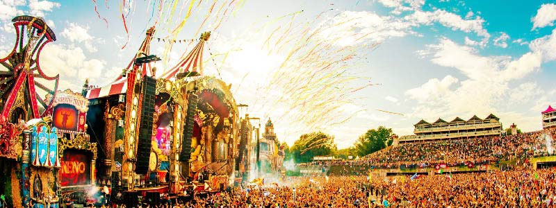
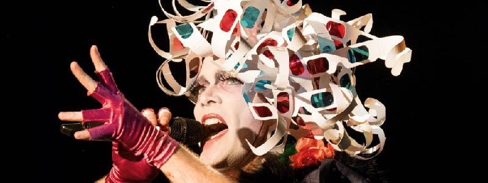
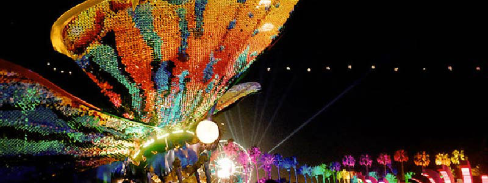

ABOUT
WELCOME TO WDCSS FESTIVAL 2021
Ireland’s largest gathering of Music & Arts, WDCSS has established itself as one of the
most unique festivals,
With a great selection of musicians and artists it’s the most delightfully diverse spring party
on the Emerald Island.
-
2015
All started in 2010 with a simple idea of have some fun and celebrate the beginning of the Spring.
 -
2016
This initial idea materialised as a one-day event held on the Gardens in the Phoenix Park.
 -
2017
It was so successful during the two frist editions that the idea grew and in 2017 we started with the two days festival.
 -
2018
Since 2018 WDCSS became the most popular Spring festival in Dublin, with more than 70,000 people.
 -
2019
And what has since developed is one of Ireland’s Arts and Music Festivals.
 -
2020
Was a special festival, as we celebrated the last weekend before the Covid madness started.
-
2021
Due to Covid-19 restrictions the festival we have no other choice but to cancel this year’s edition.
